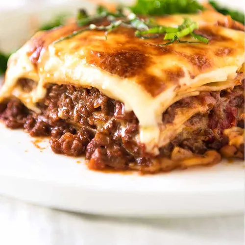

Pasta

This lasagna recipe takes a little work, but it is so satisfying and filling that it's worth it
Ingredients
- 1 pound sweet Italian sausage
- 3/4 pound lean ground beef
- 1/2 cup minced onion
- 2 cloves garlic, crushed
- 1 (28 ounce) can crushed tomatoes
- 2 (6.5 ounce) cans tomato paste
- 1/2 cup water
- 2 tablespoons white sugar
- herbs
Steps
- Gather all your ingredients
- Cook sausage, ground beef, onion, and garlic in a Dutch oven over medium heat until well browned
- Stir in crushed tomatoes, tomato sauce, tomato paste, and water. Season with sugar, 2 tablespoons parslet, basil, 1 teaspoon salt, Italian seasoning, fennel seeds, and pepper. Simmer covered for about 1.5 horus, stirring occasionally.
- Bring a large pot of lightly salted water to a boil. Cook lasagne noodles in boiling water for 8 minutes and rinse with cold water
- In a mixing bowl, combing ricotta cheese with egg, remaining 2 tablespoons parsley, and 1/2 teaspoon salt
- Preheat the oven to 375 degrees F(190ºc)
- To assemble spread 1.5 cups of meat sauce in the bottom of a 9x13" baking dish. Arrange 6 noodles lengthwise over meat sauce, overlapping slightly. Spread with 1/2 of the ricotta cheese mixture. Top with 1/3 of the mozzarella cheese slices. Spoon 1.5 cups meat sauce over mozarella and sprinkle with 1/4 cup Parmesan cheese
- Repeat layers, and top with remaining mozzarella and parmesan cheese. Cover with foil: to prevent sticking, spray foil with cooking spray or make sure the foil does not touch the cheese
- Bake in the preheated oven for 25 minutes. Remove the foil and bake for an additional 25 minutes
- Rest lasagne for 15 minutes before serving